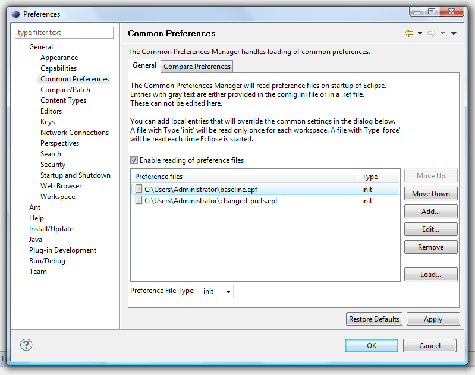

Configuring Preferences
Once the desired preferences have been exported and a preference
file is available, either at a URL location or on a file system, users'
Eclipse instances can be configured.
To configure preferences:
- Open the Common Preferences Manager dialog, which is
accessible via the Preferences
dialog (click Window > Preferences, expand General
and select Common Preferences).

- From the file list, select the Preference File you wish to load the
preferences from. To add a file to the list, click Add...,
type the location of the Preference file and click OK.
- For the selected file, set the Preference File Type to
be either "init" or "force". A file with Type
"init" will be read only once for each workspace. A file with
Type "force" will be read each time Eclipse is started. The
recommended File Type is "init".
- Load the preferences by clicking Load.... Click Yes to proceed and
OK to finish.